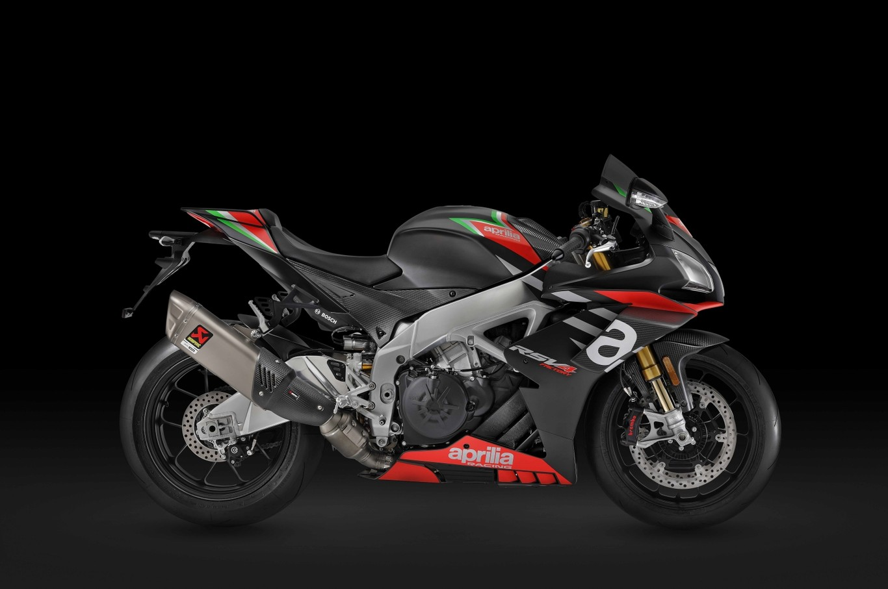

1. Aprilia RSV4 1100 Factory: 217 CV
La Aprilia RSV4 1100 Factory es una moto que hereda los componentes de la RSV4 RF LE, la primera moto de calle en usar alerones inspirados en la competición de MotoGP.
MOTO: Aprilia RSV4 1100 Factory
POTENCIA: 217 CV a 13.200 rpm
PAR MOTOR: 122 Nm a 11.000 rpm
PESO (EN ORDEN DE MARCHA): 199 kg
MOTO: Aprilia RSV4 1100 Factory
POTENCIA: 217 CV a 13.200 rpm
PAR MOTOR: 122 Nm a 11.000 rpm
PESO (EN ORDEN DE MARCHA): 199 kg

2.Aston Martin AMB 001: 180 CV
La Aston Martin AMB 001 ha sido una de las grandes revelaciones del año al ser la primera moto de la historia que ha fabricado la marca de coches con la ayuda de la compañía Brough Superior.
MOTO: Aston Martin AMB 001
POTENCIA:180 CV
PAR MOTOR: N.D.
PESO (EN ORDEN DE MARCHA): N.D.
MOTO: Aston Martin AMB 001
POTENCIA:180 CV
PAR MOTOR: N.D.
PESO (EN ORDEN DE MARCHA): N.D.

3. Ducati Streetfighter V4: 208 CV
La Ducati Streetfighter V4 es una de las bestias más salvajes sin carenado que ha nacido de las entrañas de Borgo Panigale.
Su motor entrega unos infartantes 208 CV de potencia máxima y lo que es igual de importante, solo tiene un peso de 180 kg en seco.
MOTO: Ducati Streetfighter
POTENCIA: v4 208 CV a 12.750 rpm
PAR MOTOR: 123 Nm a 11.500 rpm
PESO (EN ORDEN DE MARCHA): 201 kg
MOTO: Ducati Streetfighter
POTENCIA: v4 208 CV a 12.750 rpm
PAR MOTOR: 123 Nm a 11.500 rpm
PESO (EN ORDEN DE MARCHA): 201 kg

3.Ducati Panigale V4: 214 CV
La hermana carenada de la Ducati Streetfighter V4 se actualizó recientemente con parte del paquete aerodinámico de la Ducati Panigale V4 R. La parte ciclo, el peso y las dimensiones de la Ducati Panigale V4 son las mismas que la anterior Panigale de cuatro cilindros que llegó hasta nosotros, aunque ahora la moto es más fácil de conducir.
MOTO: Ducati Panigale V4
POTENCIA: 214 CV a 13.000 rpm
PAR MOTOR: 124,0 Nm a 10.000 rpm
PESO (EN ORDEN DE MARCHA): 198 kg
MOTO: Ducati Panigale V4
POTENCIA: 214 CV a 13.000 rpm
PAR MOTOR: 124,0 Nm a 10.000 rpm
PESO (EN ORDEN DE MARCHA): 198 kg

5. Honda CBR1000RR-R SP Fireblade
La Honda CBR1000RR Fireblade es lo más radical que ha tenido la marca japonesa hasta ahora y es que con el permiso de la Ducati Panigale V4 R, se convierte en la segunda Superbike más poderosa del mercado.
El motor es una inspiración del propulsor de las RC213V-S aunque la configuración es un Honda CBR1000RR-R-SP, no el V4 de la moto derivada de MotoGP.
MOTO: Honda CBR1000RR-R SP Fireblade
POTENCIA: 214,6 CV a 14.500 rpm
PAR MOTOR: 113 Nm a 12.500 rpm
PESO (EN ORDEN DE MARCHA): 201 kg
MOTO: Honda CBR1000RR-R SP Fireblade
POTENCIA: 214,6 CV a 14.500 rpm
PAR MOTOR: 113 Nm a 12.500 rpm
PESO (EN ORDEN DE MARCHA): 201 kg

6. Kawasaki Z H2
La Kawasaki Z H2 se ha convertido en la reina de las zetas gracias a su sistema de sobrealimentación que ayuda a que su motor de cuatro cilindros y 998 cc alcance una potencia de 200 CV.
No hay que asustarse con tantos caballos debajo de nuestro trasero ya que los japoneses han prometido que será una moto sencilla de conducir
MOTO:Kawasaki Z H2
POTENCIA:200 CV
PAR MOTOR: N.D.
PESO (EN ORDEN DE MARCHA): N.D
MOTO:Kawasaki Z H2
POTENCIA:200 CV
PAR MOTOR: N.D.
PESO (EN ORDEN DE MARCHA): N.D

7. KTM 1290 Super Duke R
La nueva KTM 1290 Super Duke R, una moto con un aire imponente y agresivo que actualizó su motor bicilíndrico con más potencia, un chasis nuevo y más electrónica.
El propulsor sigue siendo el mismo LC8 en uve a 75º con 1.301 cc que ahora está un poco más apretado hasta alcanzar los 180 CV y 140 Nm de par motor
MOTO: KTM 1290 Super Duke R
POTENCIA: 180 CV a 9.500 rpm
PAR MOTOR: 140 Nm a 8.000 rpm
PESO (EN ORDEN DE MARCHA): 205 kg
MOTO: KTM 1290 Super Duke R
POTENCIA: 180 CV a 9.500 rpm
PAR MOTOR: 140 Nm a 8.000 rpm
PESO (EN ORDEN DE MARCHA): 205 kg

8. MV Agusta Brutale 1000 RR
Como si tuviese miedo de quedarse corto, su motor alcanza nada menos que 208 CV de potencia máxima con un par motor de 115,5 Nm que con la línea de escape SC project podría aumentarse hasta alcanzar los 212 CV
MOTO: MV Agusta Brutale 1000 RR
POTENCIA: 208 CV a 13.450 rpm
PAR MOTOR: 115,5 Nm
PESO (EN ORDEN DE MARCHA): 202 kg
MOTO: MV Agusta Brutale 1000 RR
POTENCIA: 208 CV a 13.450 rpm
PAR MOTOR: 115,5 Nm
PESO (EN ORDEN DE MARCHA): 202 kg

9.Yamaha YZF-R1
La nueva R1 mejoró su motor para adaptarlo a la normativa Euro 5, pero manteniendo su potencia máxima en los 200 CV con 113,3 Nm de par motor.
MOTO: Yamaha YZF-R1
POTENCIA: 200 CV a 13.500 rpm
PAR MOTOR: 113,3 Nm a 11.500 rpm
PESO (EN ORDEN DE MARCHA): 201 kg
MOTO: Yamaha YZF-R1
POTENCIA: 200 CV a 13.500 rpm
PAR MOTOR: 113,3 Nm a 11.500 rpm
PESO (EN ORDEN DE MARCHA): 201 kg